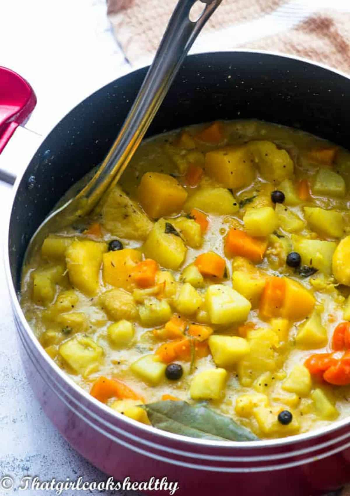

Ital Stew

Description
This recipe will let you create a delicious, healthy plant-based Ital Stew, for four people
Time to prepare - 10 minutes
Time to cook - 30 minutes
Spice level - 🌶 🌶 🌶 🌶 🌶
Ingredients
Soup:
- 2 tbsp oil
- 2 medium carrots, chopped
- 3 whole stalks of scallions, with ends cut
- 3 cloves fresh garlic, about 2tsp minced
- 1 tbsp minced or grated ginger
- 2 medium potatoes
- 2 cups fresh or frozen sweatcorn
- 1 green plantain
- 1 can red beans or black eyed peas
- 2 cups vegetable stock
- 1 cup unsweetened coconut milk
- 1 tbsp non-dairy margarine
- Juice 1/2 lime or lemon
Dumplings:
- 1/2 cup all-purpose gluten free flour
- 1/4 tsp baking powder
- 1/4 tsp sea salt
- 1/8 tsp black pepper
- 2 tsp oil
- 3-4 tbsp water
- Spices:
- 1 tsp ground allspice
- 12 stalks of fresh thyme or 1/8 tsp dried
- 2 1/2 tsp sea salt, or to taste
- 1/2 tsp black pepper, or to taste
- 1 small whole Scotch bonnet (habanero) pepper
Steps
- Heat a large soup pot on medium-low heat then add oil
- Saute carrots, garlic, scallions and ginger for 5 minutes. Then add potatoes, corn, plantains and beans and saute for 3-5 minutes
- Add all spices except Scotch bonnet and saute for 30 seconds
- Add remaining ingredients and bring soup to a boil, then reduce to medium heat and simmer covered for 20 minutes
- While the soup is coming to a boil, mix dumpling ingredients in a small bowl
- Start with mixing the flour, baking powder, salt and pepper. Then add oil and 3 tablespoons of water. Do not over mix. The dough should be slightly dry. Add extra water if needed, 1 teaspoon at a time
- When the soup is turned down to simmer, add dumplings 1 heaping teaspoon at a time
- Remove Scotch bonnet, scallions and thyme stalks before serving
Put on disposable catering gloves before chopping and handling Scotch Bonnet chillies